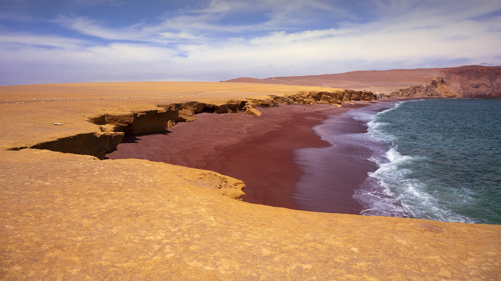
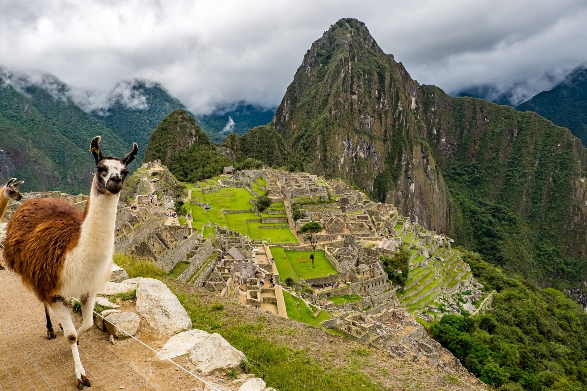
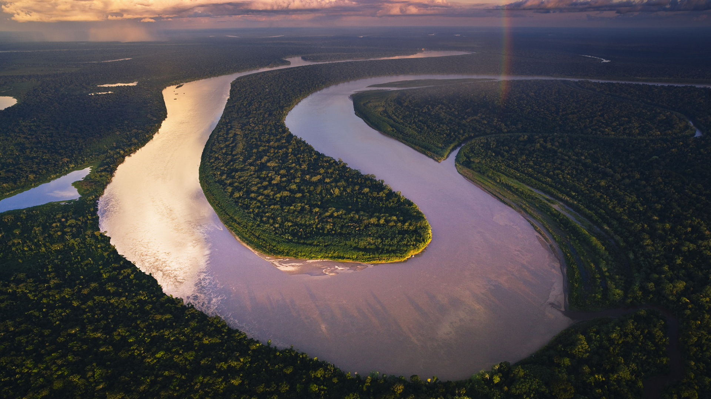

Un pays aux multiples facettes : histoire ancienne, beautés naturelles et aventures inoubliables.
Découvrez les plages ensoleillées, les déserts mystérieux et les villes vibrantes de la côte pacifique.
Plongez au cœur des Andes, avec leurs montagnes imposantes, leurs vallées verdoyantes et leurs trésors archéologiques.
Immergez-vous dans la luxuriante forêt amazonienne, un sanctuaire de biodiversité et de cultures ancestrales.
